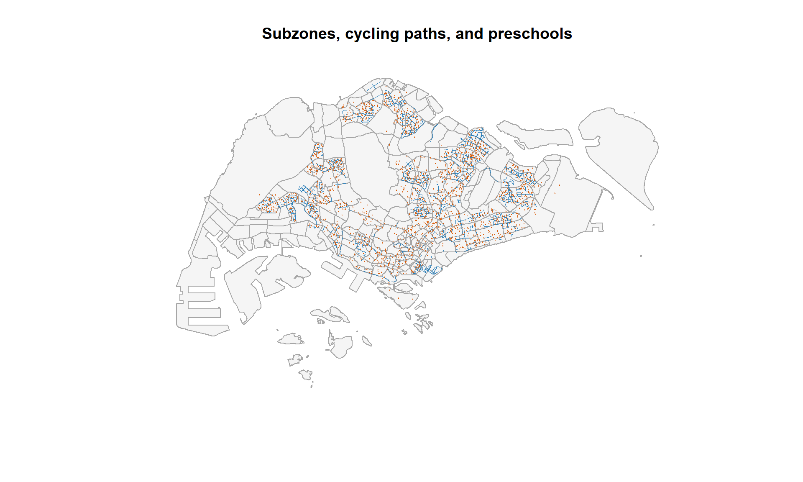
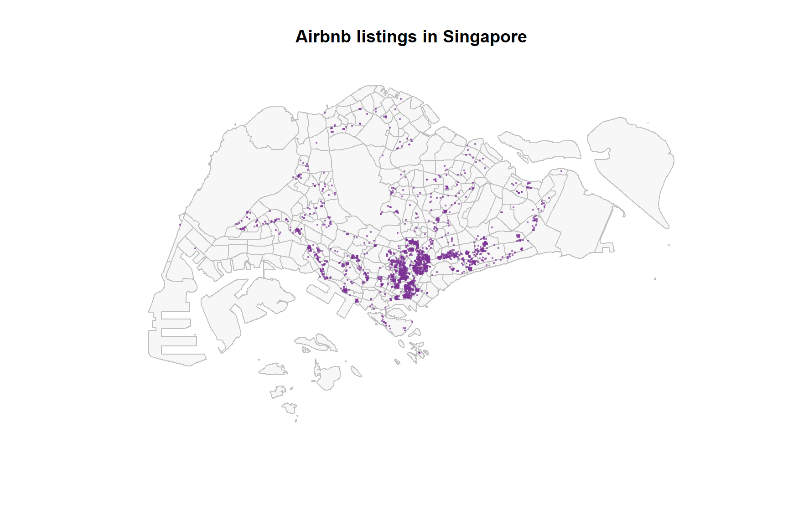
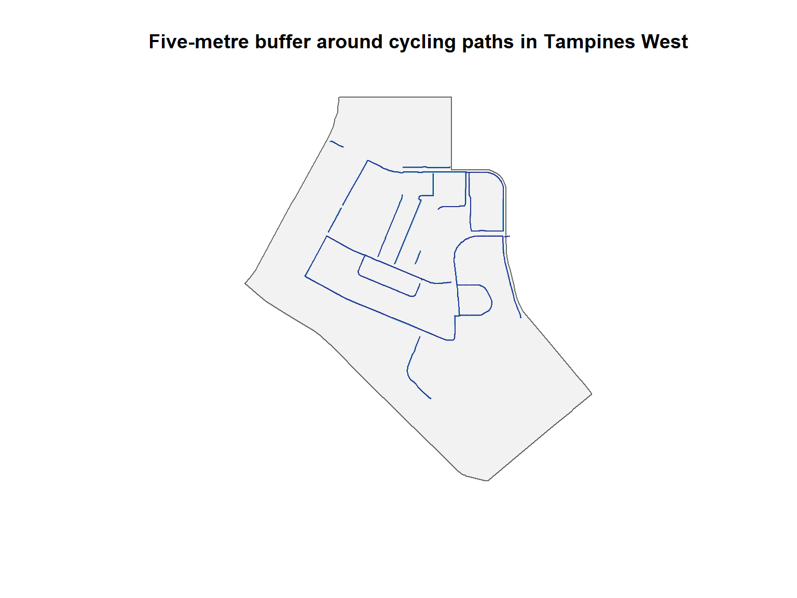
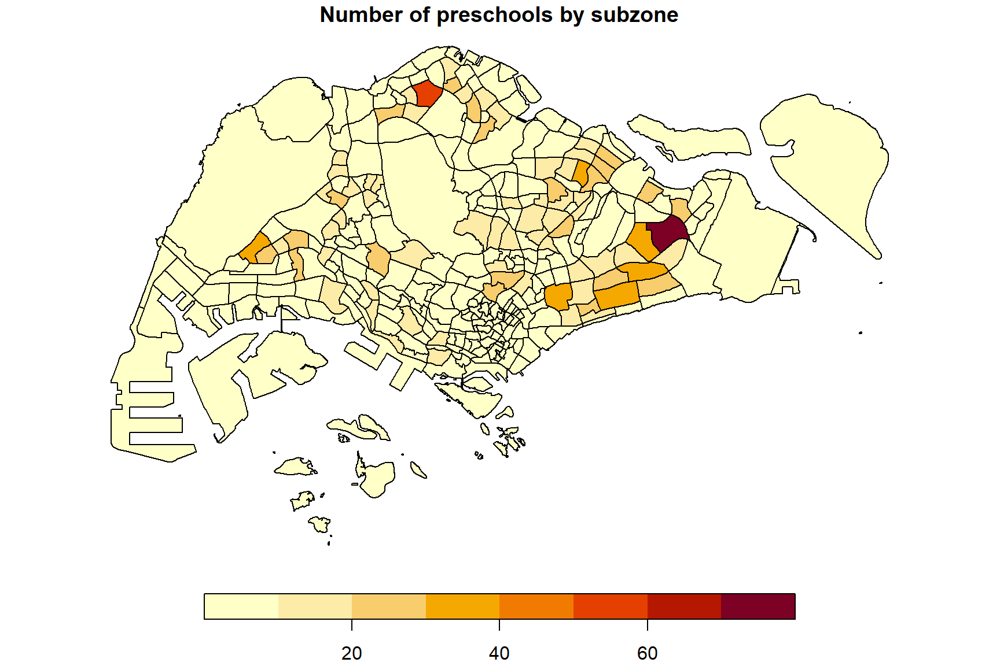

pacman::p_load(
sf,
tidyverse,
rvest,
knitr
)Hands-on Exercise 1(1): Geospatial Data Science with R
Overview
This hands-on exercise introduces the sf data model and a simple spatial-analysis workflow in R. I work with polygon, line, and point data, check coordinate reference systems, convert a non-spatial table into an sf object, and perform buffer, intersection, and point-in-polygon operations.
The workflow is adapted from Chapter 1: Geospatial Data Science with R. The data files used here are stored locally so that the exercise remains reproducible.
Learning objectives
By the end of this exercise, I should be able to:
- import GeoJSON and CSV files into R;
- recognise polygon, line, and point geometries;
- inspect and transform coordinate reference systems;
- convert longitude and latitude columns into spatial points; and
- apply basic geoprocessing operations with sf.
Getting started
Loading the R packages
Data used
| File | Geometry / type | Purpose |
|---|---|---|
MP14_SUBZONE_WEB_PL.shp |
Multipolygon | Master Plan 2014 subzone boundaries |
CyclingPathGazette.shp |
Multilinestring | Cycling path network |
PreSchoolsLocation.kml |
Point | Preschool locations |
listings.csv |
Aspatial CSV | Airbnb listings with coordinates |
The three geospatial datasets were obtained from data.gov.sg, while the listings data came from Inside Airbnb. The current cycling-path and preschool downloads were converted to the shapefile and KML formats used in the chapter.
Importing geospatial data
Subzone boundaries
mpsz <- st_read(
dsn = "data/geospatial",
layer = "MP14_SUBZONE_WEB_PL",
quiet = TRUE
) |>
st_make_valid()
mpszSimple feature collection with 323 features and 15 fields
Geometry type: GEOMETRY
Dimension: XY
Bounding box: xmin: 2667.538 ymin: 15748.72 xmax: 56396.44 ymax: 50256.33
Projected CRS: SVY21
First 10 features:
OBJECTID SUBZONE_NO SUBZONE_N SUBZONE_C CA_IND PLN_AREA_N
1 1 1 MARINA SOUTH MSSZ01 Y MARINA SOUTH
2 2 1 PEARL'S HILL OTSZ01 Y OUTRAM
3 3 3 BOAT QUAY SRSZ03 Y SINGAPORE RIVER
4 4 8 HENDERSON HILL BMSZ08 N BUKIT MERAH
5 5 3 REDHILL BMSZ03 N BUKIT MERAH
6 6 7 ALEXANDRA HILL BMSZ07 N BUKIT MERAH
7 7 9 BUKIT HO SWEE BMSZ09 N BUKIT MERAH
8 8 2 CLARKE QUAY SRSZ02 Y SINGAPORE RIVER
9 9 13 PASIR PANJANG 1 QTSZ13 N QUEENSTOWN
10 10 7 QUEENSWAY QTSZ07 N QUEENSTOWN
PLN_AREA_C REGION_N REGION_C INC_CRC FMEL_UPD_D X_ADDR
1 MS CENTRAL REGION CR 5ED7EB253F99252E 2014-12-05 31595.84
2 OT CENTRAL REGION CR 8C7149B9EB32EEFC 2014-12-05 28679.06
3 SR CENTRAL REGION CR C35FEFF02B13E0E5 2014-12-05 29654.96
4 BM CENTRAL REGION CR 3775D82C5DDBEFBD 2014-12-05 26782.83
5 BM CENTRAL REGION CR 85D9ABEF0A40678F 2014-12-05 26201.96
6 BM CENTRAL REGION CR 9D286521EF5E3B59 2014-12-05 25358.82
7 BM CENTRAL REGION CR 7839A8577144EFE2 2014-12-05 27680.06
8 SR CENTRAL REGION CR 48661DC0FBA09F7A 2014-12-05 29253.21
9 QT CENTRAL REGION CR 1F721290C421BFAB 2014-12-05 22077.34
10 QT CENTRAL REGION CR 3580D2AFFBEE914C 2014-12-05 24168.31
Y_ADDR SHAPE_Leng SHAPE_Area geometry
1 29220.19 5267.381 1630379.3 POLYGON ((31495.56 30140.01...
2 29782.05 3506.107 559816.2 POLYGON ((29092.28 30021.89...
3 29974.66 1740.926 160807.5 POLYGON ((29932.33 29879.12...
4 29933.77 3313.625 595428.9 POLYGON ((27131.28 30059.73...
5 30005.70 2825.594 387429.4 POLYGON ((26451.03 30396.46...
6 29991.38 4428.913 1030378.8 POLYGON ((25899.7 29766.74,...
7 30230.86 3275.312 551732.0 POLYGON ((27746.95 30497.17...
8 30222.86 2208.619 290184.7 POLYGON ((29351.26 29902.05...
9 29893.78 6571.323 1084792.3 POLYGON ((20996.49 30542.35...
10 30104.18 3454.239 631644.3 POLYGON ((24472.11 29621.83...The object contains one feature for each Master Plan 2014 subzone. Its attributes include the subzone, planning-area, and region names.
Cycling paths
cycling_path <- st_read(
dsn = "data/geospatial",
layer = "CyclingPathGazette",
quiet = TRUE
)
cycling_pathSimple feature collection with 8523 features and 6 fields
Geometry type: MULTILINESTRING
Dimension: XY
Bounding box: xmin: 6156.422 ymin: 27550.13 xmax: 42809.37 ymax: 49878.85
Projected CRS: SVY21 / Singapore TM
First 10 features:
OBJECTI CYL_PAT AGENCY_ INC_CRC
1 147638 Sengkang Land Transport Authority 51EE5DB1B7BA2BB5
2 147639 Bukit Panjang Land Transport Authority 8905286E2129158F
3 147640 Ang Mo Kio Land Transport Authority C1BE0614AAF208D7
4 147641 Tuas & Joo Koon Land Transport Authority 5F962E258536A011
5 147642 Tuas & Joo Koon Land Transport Authority 00DD4B045A574193
6 147643 Punggol Land Transport Authority 08C2F9FD74BCAE1A
7 147644 Bukit Batok Land Transport Authority C0A69F96672D5D34
8 147645 Hougang Land Transport Authority CFA9CA5FD65F043E
9 147646 Bukit Batok LTA (Others) F0EEBE7ACD5DA9CB
10 147647 Bukit Batok Land Transport Authority CBECD7A5AF8ED813
FMEL_UP SHAPE_1 geometry
1 20260605154757 39.178917 MULTILINESTRING ((35373.74 ...
2 20240714130101 51.395448 MULTILINESTRING ((20175.72 ...
3 20240714130101 5.799726 MULTILINESTRING ((30077.72 ...
4 20260605154757 124.071825 MULTILINESTRING ((6164.266 ...
5 20260605154757 7.579566 MULTILINESTRING ((6163.715 ...
6 20260605154757 408.708367 MULTILINESTRING ((36704.16 ...
7 20260605154757 52.261327 MULTILINESTRING ((18586.21 ...
8 20260605154756 30.194897 MULTILINESTRING ((35072.95 ...
9 20260605154757 6.626497 MULTILINESTRING ((18585.95 ...
10 20260605154757 43.660005 MULTILINESTRING ((18429.55 ...Preschool locations
The preschool GeoJSON stores useful attributes inside an HTML description. The helper function below extracts a requested value from that table.
extract_description_value <- function(description, field_name) {
attributes <- description |>
read_html() |>
html_table(fill = TRUE) |>
pluck(1)
names(attributes)[1:2] <- c("field", "value")
result <- attributes |>
filter(field == field_name) |>
pull(value)
if (length(result) == 0) NA_character_ else result[[1]]
}
preschool <- st_read(
"data/geospatial/PreSchoolsLocation.kml",
quiet = TRUE
) |>
mutate(
CENTRE_NAME = map_chr(
Description,
~ extract_description_value(.x, "CENTRE_NAME")
)
)
preschool |>
st_drop_geometry() |>
select(CENTRE_NAME) |>
head() |>
kable()| CENTRE_NAME |
|---|
| CHILDREN’S COVE PRESCHOOL PTE.LTD. |
| CHILDREN’S COVE PTE. LTD. |
| CHILDREN’S VINEYARD PRESCHOOL PTE. LTD |
| CHILDTIME CARE & DEVELOPMENT CENTRE PTE.LTD. |
| CHILTERN HOUSE |
| CHILTERN HOUSE EAST COAST |
Examining spatial objects
Geometry types and coordinate reference systems
spatial_summary <- tibble(
data = c("Subzones", "Cycling paths", "Preschools"),
features = c(nrow(mpsz), nrow(cycling_path), nrow(preschool)),
geometry = c(
as.character(st_geometry_type(mpsz, by_geometry = FALSE)),
as.character(st_geometry_type(cycling_path, by_geometry = FALSE)),
as.character(st_geometry_type(preschool, by_geometry = FALSE))
),
epsg = c(
st_crs(mpsz)$epsg,
st_crs(cycling_path)$epsg,
st_crs(preschool)$epsg
)
)
spatial_summary |>
kable()| data | features | geometry | epsg |
|---|---|---|---|
| Subzones | 323 | GEOMETRY | NA |
| Cycling paths | 8523 | MULTILINESTRING | 3414 |
| Preschools | 2290 | POINT | 4326 |
All three files use WGS 84 (EPSG:4326). This geographic CRS is useful for sharing data, but distance and area calculations should use a projected CRS. I therefore transform the layers to Singapore SVY21 (EPSG:3414).
mpsz_svy21 <- st_transform(mpsz, 3414)
cycling_path_svy21 <- st_transform(cycling_path, 3414)
preschool_svy21 <- st_transform(preschool, 3414)
st_crs(mpsz_svy21)Coordinate Reference System:
User input: EPSG:3414
wkt:
PROJCRS["SVY21 / Singapore TM",
BASEGEOGCRS["SVY21",
DATUM["SVY21",
ELLIPSOID["WGS 84",6378137,298.257223563,
LENGTHUNIT["metre",1]]],
PRIMEM["Greenwich",0,
ANGLEUNIT["degree",0.0174532925199433]],
ID["EPSG",4757]],
CONVERSION["Singapore Transverse Mercator",
METHOD["Transverse Mercator",
ID["EPSG",9807]],
PARAMETER["Latitude of natural origin",1.36666666666667,
ANGLEUNIT["degree",0.0174532925199433],
ID["EPSG",8801]],
PARAMETER["Longitude of natural origin",103.833333333333,
ANGLEUNIT["degree",0.0174532925199433],
ID["EPSG",8802]],
PARAMETER["Scale factor at natural origin",1,
SCALEUNIT["unity",1],
ID["EPSG",8805]],
PARAMETER["False easting",28001.642,
LENGTHUNIT["metre",1],
ID["EPSG",8806]],
PARAMETER["False northing",38744.572,
LENGTHUNIT["metre",1],
ID["EPSG",8807]]],
CS[Cartesian,2],
AXIS["northing (N)",north,
ORDER[1],
LENGTHUNIT["metre",1]],
AXIS["easting (E)",east,
ORDER[2],
LENGTHUNIT["metre",1]],
USAGE[
SCOPE["Cadastre, engineering survey, topographic mapping."],
AREA["Singapore - onshore and offshore."],
BBOX[1.13,103.59,1.47,104.07]],
ID["EPSG",3414]]Plotting different geometry layers
plot(
st_geometry(mpsz_svy21),
col = "grey96",
border = "grey65",
main = "Subzones, cycling paths, and preschools"
)
plot(
st_geometry(cycling_path_svy21),
col = "#2C7FB8",
lwd = 0.6,
add = TRUE
)
plot(
st_geometry(preschool_svy21),
col = "#D95F0E",
pch = 20,
cex = 0.25,
add = TRUE
)
Converting aspatial data into an sf object
The Airbnb table contains longitude and latitude values. st_as_sf() converts these columns into point geometry.
listings <- read_csv(
"data/aspatial/listings.csv",
show_col_types = FALSE
)
airbnb_sf <- listings |>
filter(!is.na(longitude), !is.na(latitude)) |>
st_as_sf(
coords = c("longitude", "latitude"),
crs = 4326,
remove = FALSE
) |>
st_transform(3414)
airbnb_sf |>
select(name, room_type, price) |>
head()Simple feature collection with 6 features and 3 fields
Geometry type: POINT
Dimension: XY
Bounding box: xmin: 28503.19 ymin: 32635.68 xmax: 42209.55 ymax: 36810.25
Projected CRS: SVY21 / Singapore TM
# A tibble: 6 x 4
name room_type price geometry
<chr> <chr> <dbl> <POINT [m]>
1 Ensuite Room (Room 1 & 2) near EXPO Private r~ NA (41972.5 36390.05)
2 B&B Room 1 near Airport & EXPO Private r~ NA (42051.51 36630.01)
3 Room 2-near Airport & EXPO Private r~ NA (42209.55 36383.43)
4 5 mins walk from Newton subway Private r~ 32 (28659 32635.68)
5 Budget short stay room near EXPO Private r~ 15 (42198.4 36810.25)
6 5mins from Newton Train Station Private r~ NA (28503.19 32637.89)plot(
st_geometry(mpsz_svy21),
col = "grey97",
border = "grey75",
main = "Airbnb listings in Singapore"
)
plot(
st_geometry(airbnb_sf),
col = adjustcolor("#7B3294", alpha.f = 0.45),
pch = 20,
cex = 0.45,
add = TRUE
)
Basic geoprocessing
Five-metre cycling-path buffer in Tampines West
I first select the Tampines West subzone, retain the cycling paths that intersect it, and then build a five-metre buffer. Because SVY21 uses metres, the buffer distance has a clear physical meaning.
tampines_west <- mpsz_svy21 |>
filter(SUBZONE_N == "TAMPINES WEST")
tampines_cycling <- cycling_path_svy21 |>
st_filter(tampines_west)
cycling_buffer_5m <- tampines_cycling |>
st_buffer(dist = 5) |>
st_intersection(tampines_west)
buffer_area_km2 <- cycling_buffer_5m |>
summarise() |>
st_area() |>
as.numeric() / 1e6
tibble(
cycling_features = nrow(tampines_cycling),
buffered_area_km2 = round(buffer_area_km2, 3)
) |>
kable()| cycling_features | buffered_area_km2 |
|---|---|
| 169 | 0.106 |
plot(
st_geometry(tampines_west),
col = "grey95",
border = "grey40",
main = "Five-metre buffer around cycling paths in Tampines West"
)
plot(
st_geometry(cycling_buffer_5m),
col = adjustcolor("#41B6C4", alpha.f = 0.65),
border = NA,
add = TRUE
)
plot(
st_geometry(tampines_cycling),
col = "#253494",
lwd = 1,
add = TRUE
)
Counting preschools within each subzone
st_intersects() returns the matching preschool points for each polygon. The length of each result is the number of preschools in that subzone.
mpsz_analysis <- mpsz_svy21 |>
mutate(
PRE_SCH_COUNT = lengths(st_intersects(geometry, preschool_svy21)),
AREA_KM2 = as.numeric(st_area(geometry)) / 1e6,
PRE_SCH_DENSITY = PRE_SCH_COUNT / AREA_KM2
)
mpsz_analysis |>
st_drop_geometry() |>
select(SUBZONE_N, PLN_AREA_N, PRE_SCH_COUNT, AREA_KM2, PRE_SCH_DENSITY) |>
slice_max(PRE_SCH_COUNT, n = 10, with_ties = FALSE) |>
mutate(
AREA_KM2 = round(AREA_KM2, 2),
PRE_SCH_DENSITY = round(PRE_SCH_DENSITY, 2)
) |>
kable(
caption = "Ten subzones with the largest number of preschools"
)| SUBZONE_N | PLN_AREA_N | PRE_SCH_COUNT | AREA_KM2 | PRE_SCH_DENSITY |
|---|---|---|---|---|
| TAMPINES EAST | TAMPINES | 72 | 4.34 | 16.59 |
| WOODLANDS EAST | WOODLANDS | 54 | 2.55 | 21.15 |
| ALJUNIED | GEYLANG | 40 | 2.96 | 13.52 |
| TAMPINES WEST | TAMPINES | 38 | 3.48 | 10.93 |
| BEDOK NORTH | BEDOK | 38 | 3.20 | 11.86 |
| FRANKEL | BEDOK | 36 | 4.30 | 8.38 |
| SENGKANG TOWN CENTRE | SENGKANG | 33 | 1.46 | 22.67 |
| YUNNAN | JURONG WEST | 32 | 2.21 | 14.50 |
| HONG KAH | JURONG WEST | 30 | 1.79 | 16.73 |
| BEDOK SOUTH | BEDOK | 29 | 3.00 | 9.68 |
plot(
mpsz_analysis["PRE_SCH_COUNT"],
pal = function(n) hcl.colors(n, "YlOrRd", rev = TRUE),
main = "Number of preschools by subzone",
key.pos = 1
)
Reflection
This exercise shows why the CRS is an analytical decision rather than only a data label. WGS 84 is suitable for storing geographic coordinates, whereas SVY21 is more appropriate for Singapore-based distance and area calculations. The same sf structure also allows polygon, line, and point layers to be combined with a consistent set of R verbs.